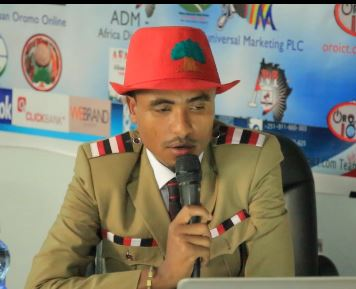

ABDISA BANCHA JARA
CEO/Founder
ABDISA BANCHA JARACEO/Founder, is Self-motivated creative Entrepreneur and knowledgeable Senior IT Expert with 8.5years exprience, Open-minded individual with a proven track record in Developing Applications, designing and hosting websites and creating and administering databases and Consulting with strong technical skills as well as excellent interpersonal skills. Works well independently, or in a group as well. I’m self-motivated & Work well independently, or in a group setting as well. My always vision is to be creative social Entrepreneur and knowledgeable IT Man. My strongest source of motivation is my vision for the future for myself, my family, and my community.
3rd Prize Entrepreneurship Global Award Winner
IT Senior Expert – CEO/Founder, Developer, social Entrepreneur, Freelancer, Trainer and Consultant.

Abdisa is Self-motivated creative Entrepreneur and knowledgeable IT Senior Expert with 8.5years experience, Open-minded individual with a proven track record in Developing Applications, designing and hosting websites and creating and administering databases and Consulting with strong technical skills as well as excellent interpersonal skills. Works well independently, or in a group as well.Abdisa self-motivated & Work well independently, or in a group setting as well. My always vision is to be creative social Entrepreneur and knowledgeable IT Man. My strongest source of motivation is my vision for the future for myself, my family, and my community.Community Engagement:
Abdisa self-motivated & Work well independently, or in a group setting as well. My always vision is to be creative social Entrepreneur and knowledgeable IT Man. My strongest source of motivation is my vision for the future for myself, my family, and my community.
A high calibre professional who is able to effectively manage People and Processes. Abdisa can make a real contribution to the growth of any business and is an expert at giving clear direction and feedback to staff in order to improve their performance. I won the BRONZE(3rd Prize Winner`}` worldwide award in Category of Best Project of 2017 on ‘Youth Citizen Entrepreneurship Competition’ held at Oct 21, 2017 in German, Berlin. At the Competition, Ethiopa my country was the 3rd next to Brazil & Gnana.The 2017 Youth Citizen Entrepreneurship Competition was taken place between more than 1600 youth from 176 Countries.
Skilled in providing customer and end-user help desk support. Easily identifies and resolves technical issues and concerns. Excellent communication and presentation capabilities.
- I helped of adding Oromo Language(Afaan Oromo) to Google Translate and Now Coordinator of Ethiopian Languages at Google Crowdsources(Google’s Product Center)
- Now, Afaan Oromo/Oromo Language is avialable on Google, Facebook, WhatsApp, Telegram… etc. We are voluntarly, cooperated team that was working on Oromo language technology-side improvement and we helped to add Afaan Oromo/Oromo Language to Google languages, Facebook, WhatsApp, Telegram… etc & still working on it tirelessly on similar projects:-Abdisa Bancha Jara” authorjob=”Chairman & Founder OICT Solutions / zHornICT Solutions” title=”8 years of experience